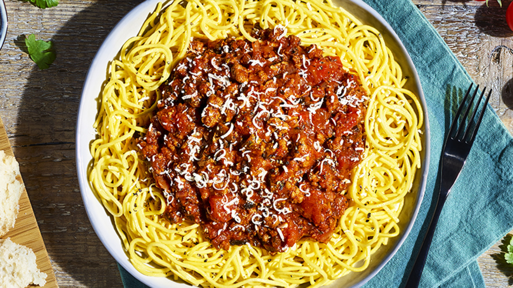

Bolognese

Description:
Ingredients
- 1000g minced pork and/or beef
- 500g pasta (Spaghetti)
- 3-4 medium onions
- 3-4 carrots
- 3-4 cloves of garlic
- 800g tomato sauce
- salt, pepper, oregano, basil
optional:
- a little bit of nutmeg
- 3-4 heads of mushroom
- 1-2 tablespoon of honey
- put 5l of salted water on the stove
- dice the onions, grate the carrots and put them in a pan
- turn the heat under the pan to medium
- add a bit (around 2dl) of water to the pan and put the lid on it
- when the onion is soft and the carrot is sweet out the garlic in the pan(minced or diced)
- when the pasta water is boiling put in the pasta and boil until al dante
- put the meat and the shrooms into the pan
- let it boil most of the water off from the meat
- pour in the tomato sauce and the spices
- mix well and let it heat up to a boil
- cut the heat
- put on plate, grate cheese on top and serve